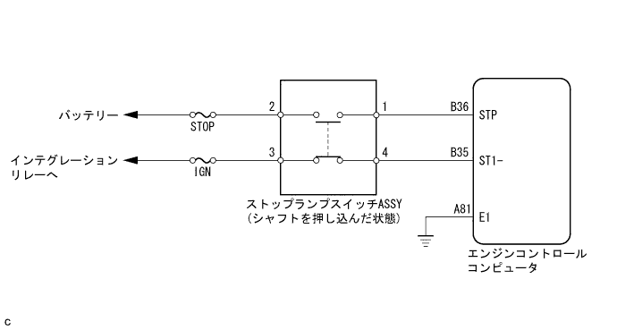
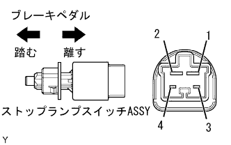
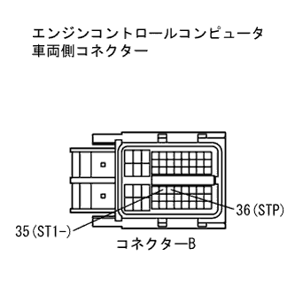

DTC P0724/95 STP Light Switch ON Malfunction |
| DTC No. SAE/TCCS | DTC Detection Condition
| Inspection Area |
|---|---|---|
| P0724/95 |
|
|

| Step 1 | Read TaSCAN Data (Stop Light Switch) |
Connect SST (TaSCAN) to DLC3.
Using SST (TaSCAN), operate according to the screen display and select [ECU Data Monitor] - [Stop Light SW].
Read the [OFF→ON] displayed on SST (TaSCAN) when the brake pedal is operated (released → depressed).
| Item Name [Symbol] | Item Description | Condition | Reference Value |
|---|---|---|---|
| Stop Light SW [STP] | Indicates the stop light switch status | Brake pedal released → depressed | OFF → ON |
| Result | Proceed to |
|---|---|
| NG | A |
| OK | B |
|
| ||||
| A | |
| Step 2 | Inspect Stop Light Switch Assembly |
 |
Disconnect the stop light switch assembly connector.
Using SST (Toyota electrical tester), measure the resistance between each pair of terminals when the shaft is not pushed in (brake pedal depressed).
| Tester Connection | Condition | Standard |
|---|---|---|
| Between terminal 1 and terminal 2 | Shaft not pushed in | Below 1 Ω |
| Between terminal 3 and terminal 4 | 10k Ω or higher |
Using SST (Toyota electrical tester), measure the resistance between each pair of terminals when the shaft is pushed in (brake pedal not depressed).
| Tester Connection | Condition | Standard |
|---|---|---|
| Terminal 1 - Terminal 2 | Shaft pushed in | 10k Ω or higher |
| Terminal 3 - Terminal 4 | Below 1 Ω |
|
| ||||
| OK | |
| Step 3 | Inspect Wire Harness and Connector (Stop Light Switch Assembly - Engine Control Computer) |
ReferenceConnect the stop light switch assembly connector.
Disconnect connector B of the engine control computer.
 |
Turn IG ON.
Using SST (Toyota electrical tester), measure the voltage between the terminals. (For Terminals of ECU, see)
| Inspection Terminal (Terminal Symbol) | Condition | Standard |
|---|---|---|
| B35 (ST1-) - Body ground | Shaft not pushed in → Shaft pushed in | 0 to 1.5V→7.5 to 14.0V |
| B36 (STP) - Body ground | Shaft not pushed in → Shaft pushed in | 7.5 to 14.0V→0 to 1.5V |
|
| ||||
| OK | ||
| ||